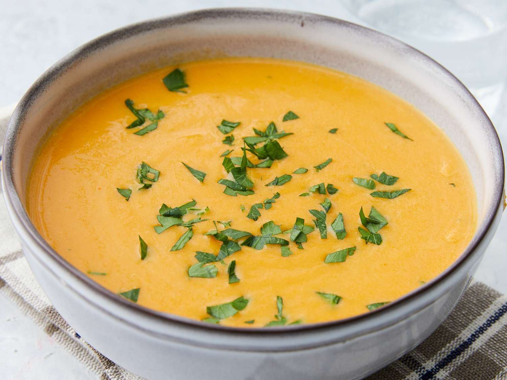

Pumpkin Soup

Description:
This is one of my favourite dishes overall. A creamy, smooth and somewhat viscous
texture combined with the taste and aroma of pumpkins will be sure to make
most people start salivating.
Ingredients
- 6 cups chicken stock
- 4 cups pumpkin puree
- 1 cup chopped onion
- 1 clove garlic, minced
- 1 and a half teaspoons salt
- 1/2 teaspoon chopped fresh thyme
- 5 whole black peppercorns
- 1/2 cup heavy whipping cream
- 1 teaspoon chopped fresh parsley
Steps
-
Put the chicken stock, pumpkin, garlic, salt, thyme, and peppercorns
in a large pot and bring it to a boil. Reduce heat to low and simmer, uncovered
for 30 minutes.
-
Transfer soup to a blender or food processor in batches; blend until it gains
a smooth consistency. Then, return the soup to the pan and bring it to a boil again.
Reduce the heat to low and simmer uncovered for 30 minutes.
-
Add heavy cream and stir.
-
Serve soup into bowls and sprinkle fresh parsley.
Home page